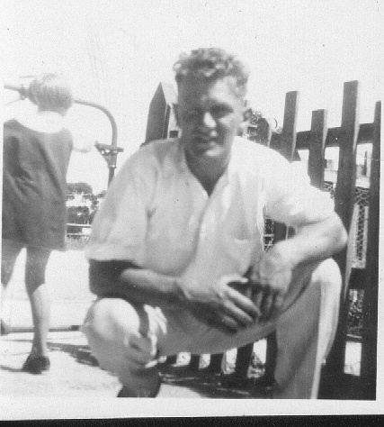
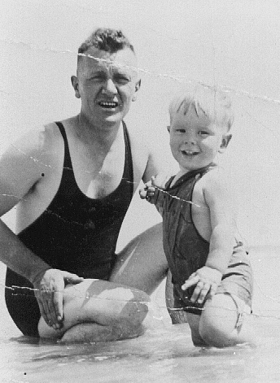
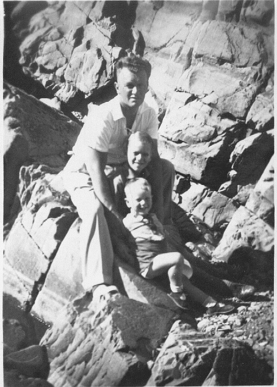

3.
ESTABLISHING A FAMILY, AND THE GREAT DEPRESSION: 1928 — 1939
It
was not unusual for newlyweds to move in with parents and the
arrangement was quite acceptable to Norman and his parents. Olive
however agitated for a place of their own. Ever frugal, she had saved
a small nest-egg of money in her working years before marriage, and by
1930, pregnant with her first child, she was for moving. They rented a
house in Hampton Rd, Keswick, the same street as Norman's parents,
so by the time Bob was born, exactly two years after their marriage,
they had the independence she craved. Bob was born in Memorial
Hospital and made a reluctant entry. He attempted to enter the world
bottom first, and gave his mother 48 hours of very hard labour. It is
reported that, on viewing his new-born son for the first time, Norman
observed that he was "the colour and texture of a used cricket
ball", and that his head was so misshapen from the birth trauma,
that Norman feared that he had "sired an idiot".
He
continued to work at Barrett's lumberyard, but in early 1931, my
brother only a few months old, the great Depression of 1929—1933
hit home.
'Take
a good look at that,' my father is reported to have told Olive as he
handed over his pay packet,' that's the last full pay you'll see
for some time.' As unemployment climbed to more than 30%, men were
being laid off everywhere. Norman had managed to secure his job at
half-time so that they had some income. With rent to pay and a child
to support, the ever-resourceful Olive took in boarders (her
newly-married brother Cyril and his wife), and they eked out
Norman's slim wage and Cyril and Lorna's rations until employment
at the lumber yard was restored.
By
the mid-1930s they were obviously looking to the future with some
confidence. They purchased a block of land at Byron Rd, Black Forest
— a deep block stretching 120 metres back to the train line — and
began planning to build. Shortly after I was born, in September 1937,
they moved into their new home.
The
year before, Gramp had retired from the railways after over 35 years
service. Sadly, within a year of his retirement, his wife died. I did
not know her, but Bob says of her simply "I loved [Nanna] more than
any person in the world." Gramp went to live in the country — the
South East of the State where he had spent his early married life —
and I did not know really get to know him until many years later.
For
the first years after my birth, my parents would have been busily
establishing their new home. Photos of the time show Norman as a young
man with his two sons (he would have been in his mid—30s). The hair,
although cut 'short back and sides' is still full and wavy; his
forearms are tanned from his work; his hands square and strong; and he
retains the firm, strong muscles of his youth. One of the worries
would have been my propensity to asthma that, later in my childhood,
would cause my parents to decide to move to a somewhat drier area of
the city, echoing his parents' decisions to shift because of his
croup.
|

Norman,
at Naracoorte 1933
(a
picture taken by
Bob)
|

Norman
and Neil at Brighton Beach, 1939
|

Norman,
Bob and Neil, Orroroo 1939
(during
a visit to Olive's sister, Alice)